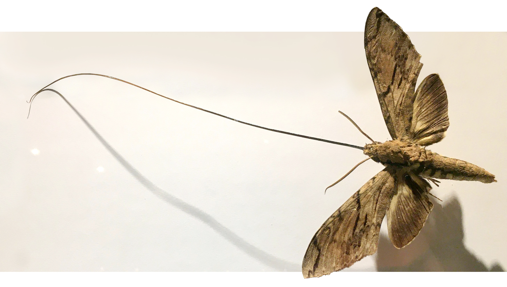
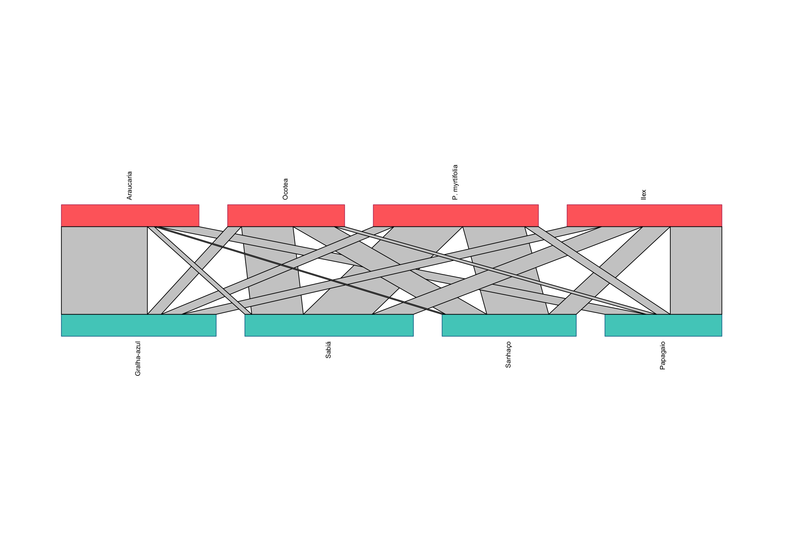
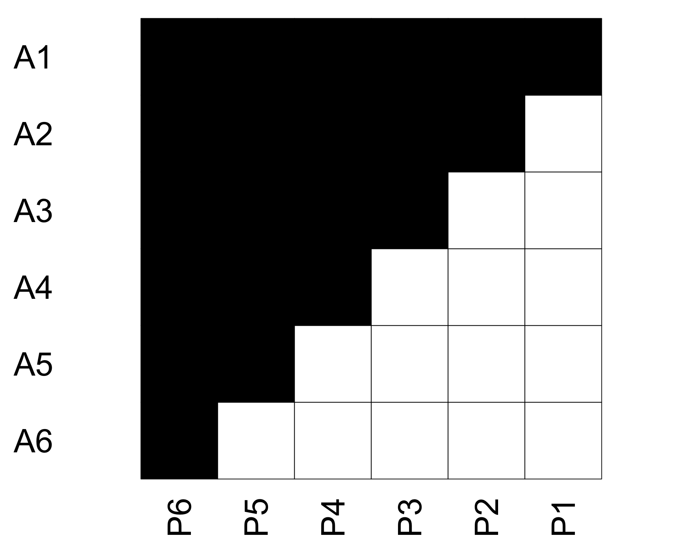
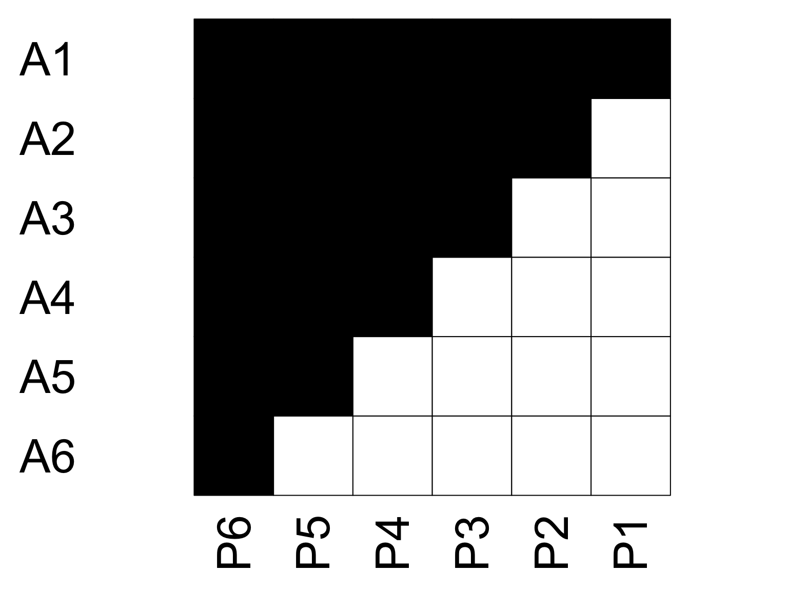
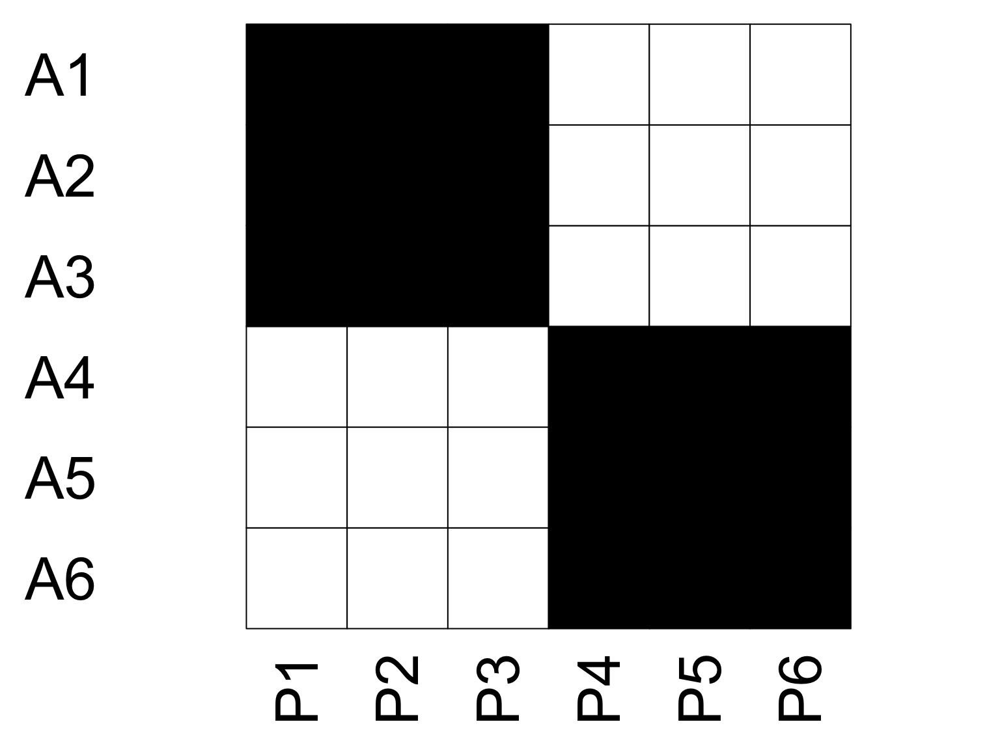
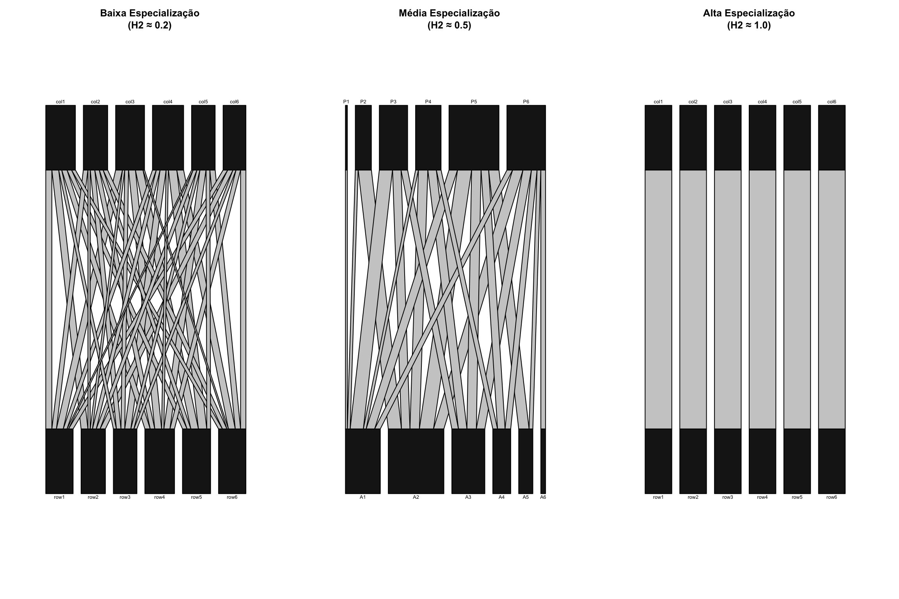

| Araucaria | Ocotea | P. myrtifolia | Ilex | |
|---|---|---|---|---|
| Gralha-azul | 25 | 4 | 6 | 10 |
| Sabiá | 2 | 15 | 20 | 12 |
| Sanhaço | 1 | 12 | 18 | 8 |
| Papagaio | 12 | 3 | 4 | 15 |
Análise de Redes Ecológicas Bipartidas
Ferramentas para Conservação e Restauração
Prof. Pedro Higuchi
PPGEF - UDESC
2025-11-17
Parte 1: Introdução
Neste curso…
O que vamos aprender?
- História e contexto das redes ecológicas
- Conceitos fundamentais e métricas
- Aplicações práticas com R
Objetivos de Aprendizagem
- Compreender a estrutura de redes bipartidas
- Calcular e interpretar métricas ecológicas
- Aplicar modelos nulos
- Identificar espécies-chave para conservação
Uma História Real: O Mistério de Darwin
Madagascar, 1862
_(45713158794).jpg)
- Darwin recebe a orquídea Angraecum sesquipedale
- Nectário de 30 cm de profundidade!
- Previsão ousada: Deve existir uma mariposa com espirotromba de 30 cm
A comunidade científica era cética…
Crédito: © sunoochi, Sapporo (CC BY 2.0)
A Descoberta: 41 Anos Depois
Madagascar, 1903
- Descoberta de Xanthopan morganii praedicta
- Espirotromba de exatos 30 cm - exatamente como previsto!
- Nome da subespécie: praedicta (do latim “predito”)
Primeira evidência científica de coevolução
Crédito: © Nesnad (CC BY 4.0)
A Lição de Darwin
“Espécies não evoluem isoladamente: elas se transformam em resposta às pressões exercidas umas pelas outras ao longo de milhões de anos.”
Implicações:
- Plantas e animais evoluem em resposta uns aos outros
- Perder um parceiro pode levar à extinção do outro
- Redes de interação são essenciais para a conservação
Por que Estudar Redes de Interação? 🤔
Quatro razões fundamentais:
- 🔬 Entender a natureza
- 🛡️ Conservar biodiversidade
- 🌾 Serviços ecossistêmicos
- 🌲 Aplicações profissionais
1. Entender a Organização da Natureza 🔬
Perguntas fundamentais:
- Como espécies coexistem?
- Quem interage com quem?
- Existem padrões universais?
Por que importa:
Base teórica para todas as aplicações práticas
2. Conservação da Biodiversidade 🛡️
Perguntas práticas:
- Quais espécies são mais importantes?
- O que acontece se uma espécie desaparecer?
- Como restaurar ecossistemas?
3. Serviços Ecossistêmicos 🌾
Dispersão de sementes: - Viabiliza regeneração natural - Economia: plantio total (US$ 2.000-3.000/ha) (Brancalion et al. 2019)
Polinização: - R$ 43 bilhões/ano no Brasil (Wolowski et al., 2019)
Controle biológico: - Prejuízo causado pela vespa da madeira: US$ 53 milhões/ano (Embrapa)
4. Aplicações em Engenharia Florestal 🌲
Áreas de atuação:
Mercado: 12 milhões de ha a restaurar até 2030 (NDC Brasil - Acordo de Paris, 2016)
História das Redes Ecológicas
Anos 1920-1950: Primeiras Observações - Teias alimentares e cadeias tróficas - Primeiras redes de polinização documentadas
Anos 1970-1980: Formalização Matemática - Modelos de estabilidade de redes - Análise estrutural de teias alimentares
História das Redes Ecológicas
Anos 1990-2000: Era Digital - Descoberta de padrões de aninhamento - Métricas de especialização em redes
Anos 2010-presente: Big Data - Análises globais de redes - Impactos das mudanças climáticas - Dinâmica temporal de interações
O que são Redes Ecológicas?
Definição:
“Representação gráfica de quem interage com quem em uma comunidade ecológica”
Componentes:
- Nós (vértices): Espécies
- Ligações (arestas): Interações
- Pesos: Intensidade/frequência
O que são Redes Ecológicas?
Tipos principais:
Unipartidas: 🐒 ↔︎ 🐒 ↔︎ 🐒 (mesmo tipo de organismo)
Bipartidas: 🌺 ↔︎ 🐝 (dois tipos diferentes) 🎯
Multipartidas: 🌱 ↔︎ 🐛 ↔︎ 🐦 (três ou mais níveis)
Essa aula: Foco em BIPARTIDAS!
Tipos de Redes Bipartidas
Mutualísticas (+/+)
- Polinização
- Dispersão de sementes
- Formiga-planta
- Micorrizas
Ambas espécies se beneficiam
Antagonísticas (+/-)
- Herbivoria
- Parasitismo
- Patógenos
Uma se beneficia, outra prejudicada
Nossa aula: Foco em FRUGIVORIA (mutualismo)
Animais comem frutos → dispersam sementes → regeneração florestal
Por que Frugivoria?
Importância Ecológica:
- Maioria das árvores tropicais dependem de animais
- Determina composição florestal futura
- Conecta fragmentos florestais (corredores)
- Mantém diversidade genética
Por que Frugivoria?
Importância Econômica:
- Regeneração de áreas degradadas
- Produção de frutos nativos
- Ecoturismo (observação de aves)
Ameaças:
- Perda de frugívoros grandes (defaunação)
- Fragmentação de habitats
- Mudanças climáticas
Contexto: Floresta com Araucária
Floresta Ombrófila Mista
- Maior extensão, Sul do Brasil (PR, SC, RS)
- Altitude: 500-1.400m
- Temperatura: 15-18°C
- <10% da área original
Espécie emblemática:
Araucaria angustifolia
Frugívoros importantes:
- Gralha-azul (Cyanocorax caeruleus)
- Tucanos e papagaios
- Macacos (bugio, macaco-prego)
- Morcegos
Ameaças:
- Fragmentação extrema
- Perda de fauna
- Necessidade urgente de restauração
Exercício para hoje
Pergunta Científica:
“Como está estruturada a rede de frugivoria em um fragmento de Floresta com Araucária? Existem espécies-chave para a regeneração florestal?”
Dados simulados para fins didáticos:
- 24 espécies de aves
- 13 espécies de mamíferos
- 33 espécies de árvores
Parte 2: Conceitos Fundamentais
Anatomia de uma Rede Bipartida
Elementos: Aves (topo) | Árvores (base) | Linhas = interações
Representações de Redes
Três formas de visualizar a mesma rede:
1. Matriz
2. Grafo Bipartido
(vimos no slide anterior)
- Visualização ecológica
- Fácil interpretação
- Boa para apresentações
3. Lista de Arestas
Gralha-azul - Araucaria: 25
Gralha-azul - Ocotea: 4
Gralha-azul - P. myrtifolia: 6
Gralha-azul - Ilex: 10
...- Formato de banco de dados
Tipos de Espécies na Rede: Generalistas 🌟
Interagem com muitas espécies | Dieta ampla e flexível | Ex: Sabiá-laranjeira
Características:
- Alto grau (degree): Visitam muitas plantas diferentes
- Alta força (strength): Somando todas interações, são muito ativos
- Baixa especialização: Não dependem de uma única planta
Papel ecológico:
- Conectividade da rede: Ligam diferentes módulos, integrando a comunidade
- Redundância funcional: Múltiplos dispersores por planta - “backup” ecológico
- Resiliência do sistema: Mantêm dispersão mesmo com perda de outras espécies
Tipos de Espécies na Rede: Especialistas 🎯
Interagem com poucas espécies | Dieta restrita | Ex: Gralha-azul e pinhão
Características:
- Baixo grau (degree): Visitam poucas espécies
- Força variável (strength): Podem fazer muitas visitas, mas só em uma planta
- Alta especialização: Relação forte e exclusiva
Papel ecológico:
- Vulneráveis à extinção: Se a planta desaparece, a ave também
- Coevolução forte: Adaptações mútuas (bico ↔︎ pinhão)
- Indicadores de qualidade: Presença indica ecossistema preservado
Propriedades Emergentes em uma Rede
Propriedades que surgem da rede como um todo:
| Propriedade | Pergunta Ecológica | Métrica (R) | Interpretação |
|---|---|---|---|
| Conectância | Quão conectada é a rede? | connectance |
0-1: proporção de interações possíveis que ocorrem |
| Aninhamento | Especialistas visitam as mesmas plantas que generalistas? | weighted NODF |
0-100: quanto maior, mais aninhada |
| Modularidade | Existem sub-comunidades especializadas? | modularity |
>0.4: módulos bem definidos |
| Especialização | Quão seletivas são as interações? | H2 |
0-1: (0=generalista, 1=especialista) |
Exemplo de como calcular: networklevel(matriz, index = "connectance")
Conceito-Chave: Aninhamento
O que é?
Padrão onde as interações dos especialistas são subconjuntos das interações dos generalistas.
Especialista A6 interage apenas com P1 | Generalista A1 interage com todas
Por que Aninhamento Importa?
Rede ANINHADA ✅
Características:
- Perda de especialista = baixo impacto: Outras espécies compensam
- Generalistas sustentam rede: Mantêm conectividade mesmo com extinções
- Maior resiliência: Rede tolera perturbações
Por que Aninhamento Importa?
Rede MODULAR ⚠️
Características:
- Extinção em cascata: Perda de uma espécie afeta todo o módulo
- Módulos isolados: Pouca redundância funcional
- Menor resiliência: Rede vulnerável a perturbações
Conceito-Chave: Especialização (H2)
O que é? Índice que mede o grau de seletividade nas interações da rede.
\[H2 = \frac{H2'}{H2'_{max}}\]
Interpretação prática:
| Valor | Significado | Exemplo |
|---|---|---|
| H2 ≈ 0 | Generalismo total | Interações ao acaso |
| H2 = 0.3-0.6 | Especialização moderada | Típico em frugivoria |
| H2 ≈ 1 | Especialização perfeita | Relações exclusivas |
Base: Entropia de Shannon
Visualizando Especialização
Conceitos em Nível de Espécie
Métricas para avaliar o papel de cada espécie na rede:
| Métrica | O que mede? | Nome no R | Interpretação |
|---|---|---|---|
| Grau | Quantos parceiros? | degree |
Número de espécies com que interage |
| Força | Quão ativa? | species strength |
Soma total de interações |
| PDI | Quão seletiva? | PDI |
0=generalista, 1=especialista |
| Centralidade | Quão importante estruturalmente? | betweenness |
Papel como “ponte” na rede |
Como calcular: specieslevel(matriz, index = "degree")
Exemplo prático: Sabiá tem alto grau (visita várias plantas) + alta força (muitas visitas) = espécie-chave por causa da por CONECTIVIDADE!
Conceito-Chave: Centralidade
Centralidade = importância como “ponte” entre diferentes partes da rede
ALTA centralidade 🌉
- Liga grupos diferentes
- Caminho obrigatório
- Perda → rede fragmenta
Ex: Ave ligando Lauraceae (dossel) ↔︎ Myrtaceae (sub-bosque)
BAIXA centralidade 🔗
- Redundante
- Não é ponte essencial
- Perda → outras compensam
Ex: Sabiá visitando Myrtaceae com outras 5 espécies
Conservação: Priorizar espécies centrais!
O que “Circula” via Centralidade?
Espécies centrais facilitam fluxos ecológicos:
| Tipo de Fluxo | Exemplo em Lages |
|---|---|
| Subsídio energético | Sp. 1 (inverno) + Sp. 2 (primavera) + Sp. 3 (verão) → recursos complementares mantêm Sabiá ativo ano todo |
| Populações viáveis | Fenologia complementar de Aquifoliaceae + Lauraceae + Myrtaceae sustenta população de dispersores generalistas |
| Cascatas | Defaunação de generalistas → falha regeneração simultânea de múltiplas famílias (Lauraceae, Myrtaceae, Rosaceae) |
| Propágulos | Gralha-azul move pinhão entre capões distantes |
| Resiliência | Falha reprodutiva de algumas espécies compensada por outras |
Centralidade = integração funcional da floresta!
Espécies-Chave para Conservação
Como identificar espécies prioritárias?
| Tipo | Características | Métricas | Papel Ecológico | Exemplo |
|---|---|---|---|---|
| Generalistas Ativos | Muitos parceiros + muitas interações | Alto grau + alta força | Mantêm rede conectada | Sabiá-laranjeira |
| Especialistas Fortes | Poucos parceiros + interações intensas | Baixo grau + alta força | Vulneráveis mas únicos | Gralha-azul ↔︎ Araucaria |
| Conectores | Ligam diferentes módulos | Alta centralidade (betweenness) | Integram sub-redes | Ave ligando dossel-solo |
Estratégia: Priorizar todos os 3 tipos - cada um tem função única!
Resumo dos Conceitos 📝
| Conceito | Nível | O que mede | Valores |
|---|---|---|---|
| Conectância | Rede | Densidade de conexões | 0-1 |
| H2 | Rede | Especialização geral | 0-1 |
| Nestedness | Rede | Padrão de subconjuntos | 0-100 |
| Grau | Espécie | Número de parceiros | 1-N |
| PDI | Espécie | Especialização individual | 0-1 |
| Força | Espécie | Total de interações | >0 |
Próximo: Vamos criar nossos dados e calcular tudo isso! 💪
Parte 3: Criando Dados Didáticos
Duração: 20 minutos
Nosso Dataset Didático: Floresta com Araucária
Vamos simular uma rede de frugivoria!
Cenário:
- Fragmento florestal em Lages-SC
- Altitude: 920m
- Método: observação focal de árvores frutificando
Comunidade:
- 37 espécies de frugívoros (24 aves + 13 mamíferos)
- 33 espécies de árvores produtoras de frutos
- Dados de frequência de visitação
Passo 1: Criar Lista de Espécies
# ============================================
# CRIAR COMUNIDADE DE FRUGÍVOROS
# ============================================
# AVES (24 espécies)
aves <- c(
# Grandes frugívoros
"Ramphastos dicolorus", # Tucano-de-bico-verde
"Amazona vinacea", # Papagaio-de-peito-roxo
"Amazona pretrei", # Papagaio-charão
"Cyanocorax caeruleus", # Gralha-azul
# Médios frugívoros
"Turdus rufiventris", # Sabiá-laranjeira
"Turdus albicollis", # Sabiá-coleira
"Turdus amaurochalinus", # Sabiá-poca
"Euphonia chlorotica", # Fim-fim
"Euphonia cyanocephala", # Gaturamo-rei
"Tangara sayaca", # Sanhaço-cinzento
"Pipraeidea melanonota", # Saíra-viúva
"Dacnis cayana", # Saí-azul
# Pequenos frugívoros
"Elaenia flavogaster", # Guaracava
"Myiodynastes maculatus", # Bem-te-vi-rajado
"Pitangus sulphuratus", # Bem-te-vi
"Tyrannus melancholicus", # Suiriri
# Beija-flores (especialistas)
"Thalurania glaucopis", # Beija-flor-de-fronte-violeta
"Leucochloris albicollis", # Beija-flor-de-papo-branco
"Stephanoxis lalandi", # Beija-flor-de-topete
# Outros
"Pyroderus scutatus", # Pavó
"Procnias nudicollis", # Araponga
"Selenidera maculirostris", # Araçari-poca
"Penelope obscura", # Jacuaçu
"Columba livia" # Pomba-doméstica
)
# MAMÍFEROS (13 espécies)
mamiferos <- c(
# Primatas
"Alouatta guariba", # Bugio-ruivo
"Sapajus nigritus", # Macaco-prego
# Morcegos frugívoros
"Artibeus lituratus", # Morcego-grande-de-listra
"Artibeus fimbriatus", # Morcego-das-frutas-grande
"Sturnira lilium", # Morcego-de-ombros-amarelos
"Carollia perspicillata", # Morcego-cauda-curta
"Platyrrhinus lineatus", # Morcego-de-listra-branca
# Roedores
"Dasyprocta azarae", # Cutia
# Marsupiais
"Didelphis albiventris", # Gambá-de-orelha-branca
# Carnívoros
"Nasua nasua", # Quati
"Procyon cancrivorus", # Mão-pelada
"Eira barbara", # Irara
"Leopardus wiedii" # Gato-maracajá
)
# Juntar todos
frugivoros <- c(aves, mamiferos)
cat("Total de frugívoros:", length(frugivoros), "\n")Total de frugívoros: 37 - Aves: 24 - Mamíferos: 13 Passo 2: Criar Lista de Árvores
# ============================================
# CRIAR COMUNIDADE DE ÁRVORES
# ============================================
arvores <- c(
# Myrtaceae (frutos carnosos, muito visitados)
"Eugenia uniflora", # Pitangueira
"Eugenia pyriformis", # Uvaia
"Campomanesia xanthocarpa", # Guabiroba
"Myrcia splendens", # Cambuí-vermelho
"Myrcianthes pungens", # Guabiju
"Myrcia palustris", # Cambuí
# Lauraceae (frutos importantes para aves grandes)
"Ocotea pulchella", # Canela-lageana
"Nectandra megapotamica", # Canela-imbuia
"Ocotea puberula", # Canela-guaicá
# Araucariaceae (pinhão - recurso sazonal importante)
"Araucaria angustifolia", # Araucária
# Aquifoliaceae
"Ilex paraguariensis", # Erva-mate
"Ilex microdonta", # Caúna-miúda
"Ilex theezans", # Caúna
# Rosaceae
"Prunus myrtifolia", # Pessegueiro-bravo
# Sapindaceae
"Cupania vernalis", # Camboatá
"Allophylus edulis", # Chal-chal
# Solanaceae (pioneiras, muito produtivas)
"Solanum pseudoquina", # Joá
"Solanum sanctaecatharinae", # Joá-manso
"Solanum variabile", # Joá-de-árvore
# Salicaceae
"Casearia decandra", # Guaçatunga
"Xylosma ciliatifolia", # Sucará
# Celastraceae
"Maytenus ilicifolia", # Espinheira-santa
"Schaefferia argentinensis", # Sombreiro
# Outras famílias importantes
"Schinus terebinthifolia", # Aroeira-vermelha (Anacardiaceae)
"Lithraea brasiliensis", # bugreiro (Anacardiaceae)
"Zanthoxylum rhoifolium", # Mamica-de-cadela (Rutaceae)
"Myrsine coriacea", # Capororoca (Primulaceae)
"Myrsine umbellata", # Capororoquinha (Primulaceae)
"Drimys brasiliensis", # Casca-d'anta (Winteraceae)
"Roupala montana", # Carvalho-brasileiro (Proteaceae)
"Sebastiania commersoniana", # Branquilho (Euphorbiaceae)
"Matayba elaeagnoides", # Camboatá-branco (Sapindaceae)
"Styrax leprosus" # Carne-de-vaca (Styracaceae)
)
cat("Total de árvores:", length(arvores), "\n")Total de árvores: 33 Passo 3: Criar Matriz de Interações
# ============================================
# CRIAR MATRIZ DE INTERAÇÕES REALISTA
# ============================================
# Dimensões
n_frug <- length(frugivoros)
n_arv <- length(arvores)
# Criar matriz vazia
matriz_frugivoria <- matrix(0,
nrow = n_frug,
ncol = n_arv,
dimnames = list(frugivoros, arvores))
# ============================================
# ESTRATÉGIA DE PREENCHIMENTO REALISTA
# ============================================
# 1. GENERALISTAS (10% das espécies) - muitas interações
n_generalistas <- round(n_frug * 0.10)
generalistas_idx <- 1:n_generalistas
for(i in generalistas_idx) {
# Generalistas interagem com 40-60% das plantas
n_parceiros <- sample(round(n_arv * 0.4):round(n_arv * 0.6), 1)
parceiros <- sample(1:n_arv, n_parceiros)
# Frequência de visitas: alta
matriz_frugivoria[i, parceiros] <- rpois(n_parceiros, lambda = 8)
}
# 2. MODERADOS (60% das espécies) - interações médias
moderados_idx <- (n_generalistas + 1):round(n_frug * 0.70)
for(i in moderados_idx) {
# Moderados interagem com 15-35% das plantas
n_parceiros <- sample(round(n_arv * 0.15):round(n_arv * 0.35), 1)
parceiros <- sample(1:n_arv, n_parceiros)
# Frequência de visitas: média
matriz_frugivoria[i, parceiros] <- rpois(n_parceiros, lambda = 4)
}
# 3. ESPECIALISTAS (30% das espécies) - poucas interações
especialistas_idx <- (round(n_frug * 0.70) + 1):n_frug
for(i in especialistas_idx) {
# Especialistas interagem com 5-15% das plantas
n_parceiros <- sample(round(n_arv * 0.05):round(n_arv * 0.15), 1)
n_parceiros <- max(n_parceiros, 1) # Pelo menos 1 parceiro
parceiros <- sample(1:n_arv, n_parceiros)
# Frequência de visitas: variável (alguns muito especializados)
if(runif(1) > 0.7) {
# 30% dos especialistas têm uma interação muito forte
matriz_frugivoria[i, parceiros] <- c(rpois(1, lambda = 15),
rpois(n_parceiros-1, lambda = 2))
} else {
matriz_frugivoria[i, parceiros] <- rpois(n_parceiros, lambda = 3)
}
}
# ============================================
# AJUSTES ECOLÓGICOS REALISTAS
# ============================================
# Araucária: especialistas importantes (Gralha-azul, papagaios, cutia)
araucaria_idx <- which(colnames(matriz_frugivoria) == "Araucaria angustifolia")
gralha_idx <- which(rownames(matriz_frugivoria) == "Cyanocorax caeruleus")
cutia_idx <- which(rownames(matriz_frugivoria) == "Dasyprocta azarae")
matriz_frugivoria[gralha_idx, araucaria_idx] <- 45 # Interação muito forte
matriz_frugivoria[cutia_idx, araucaria_idx] <- 38
# Myrtaceae: muito visitadas por tucanos e sabiás
myrtaceae_idx <- grep("Eugenia|Psidium|Campomanesia|Myrcia",
colnames(matriz_frugivoria))
tucanos_idx <- grep("Ramphastos", rownames(matriz_frugivoria))
sabias_idx <- grep("Turdus", rownames(matriz_frugivoria))
for(i in tucanos_idx) {
parceiros_myr <- sample(myrtaceae_idx,
min(4, length(myrtaceae_idx)))
matriz_frugivoria[i, parceiros_myr] <-
matriz_frugivoria[i, parceiros_myr] + rpois(length(parceiros_myr), 5)
}
# Remover alguns zeros para criar rede mais realista
# (algumas espécies raras sem interações observadas)
especies_raras <- sample(1:n_frug, round(n_frug * 0.05))
for(i in especies_raras) {
if(sum(matriz_frugivoria[i, ]) < 5) {
matriz_frugivoria[i, ] <- 0
}
}
# Remover espécies sem nenhuma interação
matriz_frugivoria <- matriz_frugivoria[rowSums(matriz_frugivoria) > 0, ]
matriz_frugivoria <- matriz_frugivoria[, colSums(matriz_frugivoria) > 0]
# Estatísticas da rede
cat("\n=== ESTATÍSTICAS DA REDE CRIADA ===\n")
=== ESTATÍSTICAS DA REDE CRIADA ===Dimensões finais: 37 × 33 Total de interações: 280 Total de visitas: 1489 Conectância: 0.229 Visualizar Nossos Dados Simulados

Primeiras Impressões da Rede 👀
Distribuição de Interações
Min. 1st Qu. Median Mean 3rd Qu. Max.
2.000 5.000 7.000 7.568 9.000 20.000 Min. 1st Qu. Median Mean 3rd Qu. Max.
3.000 7.000 8.000 8.485 10.000 16.000 Parte 4: Análises de Rede
Duração: 45 minutos
Métricas de Nível de Rede
Calcular propriedades da rede com networklevel():
Conectividade da Rede
connectance
0.2293202 weighted connectance
0.1238612 links per species
4 Especialização e Aninhamento
Interpretando H2
=== INTERPRETAÇÃO DO H2 ===Valor observado: 0.4 if(h2_valor < 0.3) {
interpretacao <- "BAIXA especialização\n → Rede com interações generalistas\n → Espécies com dietas amplas\n → Baixa seletividade"
} else if(h2_valor < 0.6) {
interpretacao <- "MODERADA especialização\n → Mix de generalistas e especialistas\n → Padrão comum em redes mutualísticas\n → Rede com estrutura intermediária"
} else {
interpretacao <- "ALTA especialização\n → Interações muito seletivas\n → Forte potencial para coevolução\n → Rede altamente estruturada"
}
cat(interpretacao, "\n\n")MODERADA especialização
→ Mix de generalistas e especialistas
→ Padrão comum em redes mutualísticas
→ Rede com estrutura intermediária Interpretando Aninhamento
weighted NODF
15.75039 BAIXO aninhamento → Estrutura mais modularImplicações do Aninhamento para Conservação
# O que significa para conservação?
if(nodf_valor > 30) {
cat("✓ Rede ANINHADA\n\n")
cat(" • Perda de especialistas tem impacto menor\n")
cat(" • Generalistas mantêm conectividade\n")
cat(" • Rede relativamente estável\n")
} else {
cat("⚠ Rede POUCO ANINHADA - Atenção!\n\n")
cat(" • Rede mais vulnerável\n")
cat(" • Extinções podem causar efeitos em cascata\n")
}⚠ Rede POUCO ANINHADA - Atenção!
• Rede mais vulnerável
• Extinções podem causar efeitos em cascataVisualização: Rede Completa 🕸️
# Criar visualização mais elaborada
plotweb(matriz_frugivoria,
method = "normal",
text.rot = 90,
col.interaction = "grey80",
bor.col.interaction = "grey60",
col.high = "#FF6B6B", # Frugívoros em vermelho
col.low = "#4ECDC4", # Árvores em azul
bor.col.high = "#C44569",
bor.col.low = "#227C9D",
labsize = 0.7,
y.lim = c(-1, 3))
title(main = paste0("Rede de Frugivoria - Floresta com Araucária\n",
"H2 = ", round(h2_valor, 3),
" | NODF = ", round(nodf_valor, 1),
" | Conectância = ",
round(metricas_rede["weighted connectance"], 3)))
Métricas de Nível de Espécie
Calcular métricas para cada espécie:
Separando Frugívoros e Árvores
# Separar os dois níveis tróficos
# higher level = parte de cima do grafo (árvores)
# lower level = parte de baixo do grafo (frugívoros)
arv_metrics <- as.data.frame(metricas_especies$`higher level`)
frug_metrics <- as.data.frame(metricas_especies$`lower level`)
# Adicionar coluna com nomes das espécies
frug_metrics$especie <- rownames(frug_metrics)
arv_metrics$especie <- rownames(arv_metrics)
# Quantas espécies foram analisadas?
nrow(frug_metrics) # Frugívoros[1] 37[1] 33Top 10 Frugívoros Mais Importantes 🦜
# Ordenar por força (strength)
top_frug <- frug_metrics %>%
arrange(desc(species.strength)) %>%
head(10) %>%
select(especie, degree, species.strength, PDI)
# Formatar tabela
kable(top_frug,
digits = 3,
col.names = c("Espécie", "Grau", "Força", "PDI"),
caption = "Top 10 Frugívoros por Força de Interação")| Espécie | Grau | Força | PDI | |
|---|---|---|---|---|
| Ramphastos dicolorus | Ramphastos dicolorus | 20 | 4.487 | 0.618 |
| Amazona vinacea | Amazona vinacea | 16 | 3.248 | 0.719 |
| Cyanocorax caeruleus | Cyanocorax caeruleus | 15 | 2.864 | 0.925 |
| Amazona pretrei | Amazona pretrei | 13 | 2.734 | 0.714 |
| Tyrannus melancholicus | Tyrannus melancholicus | 11 | 1.188 | 0.807 |
| Myiodynastes maculatus | Myiodynastes maculatus | 11 | 1.168 | 0.858 |
| Leucochloris albicollis | Leucochloris albicollis | 11 | 1.010 | 0.835 |
| Dacnis cayana | Dacnis cayana | 9 | 0.956 | 0.868 |
| Tangara sayaca | Tangara sayaca | 10 | 0.894 | 0.848 |
| Pyroderus scutatus | Pyroderus scutatus | 10 | 0.884 | 0.821 |
Interpretação:
- Força alta = muitas visitas totais (dispersor importante)
- Grau alto = muitas espécies visitadas (generalista)
- PDI baixo = generalista | PDI alto = especialista
Top 10 Árvores Mais Visitadas
# Ordenar por força (strength)
top_arv <- arv_metrics %>%
arrange(desc(species.strength)) %>%
head(10) %>%
select(especie, degree, species.strength, PDI)
# Formatar tabela
kable(top_arv,
digits = 3,
col.names = c("Espécie", "Grau", "Força", "PDI"),
caption = "Top 10 Árvores por Frequência de Visitação")| Espécie | Grau | Força | PDI | |
|---|---|---|---|---|
| Sebastiania commersoniana | Sebastiania commersoniana | 16 | 2.390 | 0.828 |
| Araucaria angustifolia | Araucaria angustifolia | 13 | 2.242 | 0.943 |
| Eugenia uniflora | Eugenia uniflora | 12 | 1.664 | 0.869 |
| Myrcianthes pungens | Myrcianthes pungens | 11 | 1.585 | 0.872 |
| Casearia decandra | Casearia decandra | 11 | 1.559 | 0.900 |
| Zanthoxylum rhoifolium | Zanthoxylum rhoifolium | 10 | 1.474 | 0.892 |
| Prunus myrtifolia | Prunus myrtifolia | 9 | 1.453 | 0.851 |
| Ilex theezans | Ilex theezans | 10 | 1.446 | 0.892 |
| Campomanesia xanthocarpa | Campomanesia xanthocarpa | 7 | 1.430 | 0.952 |
| Myrsine coriacea | Myrsine coriacea | 8 | 1.332 | 0.889 |
Interpretação:
- Força alta = recurso muito usado
- Grau alto = visitada por muitos frugívoros
- PDI baixo = generalista | PDI alto = especialista
Identificando Espécies-Chave
# Classificar frugívoros
frug_metrics <- frug_metrics %>%
mutate(
tipo = case_when(
degree >= quantile(degree, 0.75) &
species.strength >= quantile(species.strength, 0.75) ~ "Super-generalista",
degree >= quantile(degree, 0.75) ~ "Generalista",
species.strength >= quantile(species.strength, 0.75) ~ "Especialista forte",
TRUE ~ "Periférico"
)
)
# Plotar
ggplot(frug_metrics, aes(x = degree, y = species.strength,
color = tipo, size = PDI)) +
geom_point(alpha = 0.7) +
scale_color_manual(values = c(
"Super-generalista" = "#FF6B6B",
"Generalista" = "#4ECDC4",
"Especialista forte" = "#FFE66D",
"Periférico" = "#95E1D3"
)) +
labs(
title = "Identificação de Espécies-Chave de Frugívoros",
subtitle = "Baseado em Grau e Força de Interação",
x = "Grau (número de parceiros)",
y = "Força (total de interações)",
color = "Tipo funcional",
size = "Especialização (PDI)"
) +
theme_minimal(base_size = 14) +
theme(
legend.position = "right",
plot.title = element_text(hjust = 0.5, face = "bold"),
plot.subtitle = element_text(hjust = 0.5)
)Distribuição de Especialização (PDI)
par(mfrow = c(1, 2))
# Histograma frugívoros
hist(frug_metrics$PDI,
breaks = 15,
col = "#FF6B6B",
border = "white",
main = "Especialização dos Frugívoros",
xlab = "PDI (0 = generalista, 1 = especialista)",
ylab = "Frequência",
xlim = c(0, 1))
abline(v = mean(frug_metrics$PDI), col = "darkred", lwd = 2, lty = 2)
legend("topright", legend = paste("Média =", round(mean(frug_metrics$PDI), 2)),
col = "darkred", lty = 2, lwd = 2)
# Histograma árvores
hist(arv_metrics$PDI,
breaks = 15,
col = "#4ECDC4",
border = "white",
main = "Especialização das Árvores",
xlab = "PDI (0 = generalista, 1 = especialista)",
ylab = "Frequência",
xlim = c(0, 1))
abline(v = mean(arv_metrics$PDI), col = "darkblue", lwd = 2, lty = 2)
legend("topright", legend = paste("Média =", round(mean(arv_metrics$PDI), 2)),
col = "darkblue", lty = 2, lwd = 2)Comparação: Frugívoros vs Árvores
Welch Two Sample t-test
data: frug_metrics$PDI and arv_metrics$PDI
t = -1.0559, df = 50.019, p-value = 0.2961
alternative hypothesis: true difference in means is not equal to 0
95 percent confidence interval:
-0.04566523 0.01419610
sample estimates:
mean of x mean of y
0.8984760 0.9142105 Parte 5: Modelos Nulos
Por que Modelos Nulos?
Pergunta: O H2 que encontramos é significativo ou apenas acaso?
Solução: Comparar com o esperado ao acaso (modelo nulo)
Como funciona:
- Aleatoriza matriz 1000 vezes
- Calcula H2 para cada matriz aleatória
- Compara observado vs. distribuição nula
- p < 0.05 = padrão REAL (não aleatório)
Teste Nulo para H2
obs null mean lower CI upper CI t P
H2 0.3999375 0.09745422 0.09660413 0.09830431 -706.0342 4.456483e-185Visualização do Modelo Nulo
# Gerar distribuição nula
set.seed(456)
nulls <- nullmodel(matriz_frugivoria, N = 100, method = 1)
null_H2 <- sapply(nulls, function(x) networklevel(x, index = "H2"))
null_H2 <- null_H2[is.finite(null_H2)]
# Valor observado
h2_obs <- as.numeric(null_test_h2["observed"])
# Histograma
hist(null_H2, breaks = 40, col = "lightblue", border = "white",
main = "H2: Observado vs. Esperado ao Acaso",
xlab = "H2 (Especialização)", ylab = "Frequência")
abline(v = h2_obs, col = "red", lwd = 3, lty = 2)
abline(v = mean(null_H2), col = "blue", lwd = 2, lty = 3)
legend("topright",
legend = c("Observado", "Média Nula"),
col = c("red", "blue"), lty = c(2, 3), lwd = c(3, 2))Parte 6: Aplicações Práticas
Duração: 25 minutos
Aplicação 1: Priorização para Conservação 🛡️
Como identificar espécies-chave para conservação?
Critérios:
- Grau: Quantas plantas visitam
- Força: Intensidade de interações
- Índice: Combinação ponderada
Categorias:
- Crítico: ≥ 0.75
- Alto: 0.50-0.75
- Médio: 0.25-0.50
- Baixo: < 0.25
# Criar índice de prioridade
frug_prioridade <- frug_metrics %>%
mutate(
degree_norm = (degree - min(degree)) / (max(degree) - min(degree)),
strength_norm = (species.strength - min(species.strength)) /
(max(species.strength) - min(species.strength)),
prioridade = (degree_norm * 0.4) + (strength_norm * 0.6),
categoria = case_when(
prioridade >= 0.75 ~ "Crítico",
prioridade >= 0.50 ~ "Alto",
prioridade >= 0.25 ~ "Médio",
TRUE ~ "Baixo"
)
) %>%
arrange(desc(prioridade))
# Top 10 prioritários
frug_prioridade %>%
head(10) %>%
select(especie, degree, species.strength, prioridade, categoria) especie degree species.strength
Ramphastos dicolorus Ramphastos dicolorus 20 4.4874924
Amazona vinacea Amazona vinacea 16 3.2481745
Cyanocorax caeruleus Cyanocorax caeruleus 15 2.8636236
Amazona pretrei Amazona pretrei 13 2.7343504
Tyrannus melancholicus Tyrannus melancholicus 11 1.1880924
Myiodynastes maculatus Myiodynastes maculatus 11 1.1683442
Leucochloris albicollis Leucochloris albicollis 11 1.0104944
Tangara sayaca Tangara sayaca 10 0.8942238
Pyroderus scutatus Pyroderus scutatus 10 0.8837958
Dacnis cayana Dacnis cayana 9 0.9557244
prioridade categoria
Ramphastos dicolorus 1.0000000 Crítico
Amazona vinacea 0.7423488 Alto
Cyanocorax caeruleus 0.6677610 Alto
Amazona pretrei 0.6057129 Alto
Tyrannus melancholicus 0.3507091 Médio
Myiodynastes maculatus 0.3480199 Médio
Leucochloris albicollis 0.3265250 Médio
Tangara sayaca 0.2884698 Médio
Pyroderus scutatus 0.2870498 Médio
Dacnis cayana 0.2746223 MédioAplicação 2: Planejamento de Restauração 🌱
Quais espécies arbóreas plantar primeiro?
Critério: Árvores visitadas por muitos frugívoros diferentes
# Criar índice de restauração
arv_restauracao <- arv_metrics %>%
mutate(
degree_norm = (degree - min(degree)) / (max(degree) - min(degree)),
strength_norm = (species.strength - min(species.strength)) /
(max(species.strength) - min(species.strength)),
# Priorizamos diversidade de visitantes (grau)
indice_restauracao = (degree_norm * 0.7) + (strength_norm * 0.3),
categoria = case_when(
indice_restauracao >= 0.75 ~ "Prioritária",
indice_restauracao >= 0.50 ~ "Importante",
indice_restauracao >= 0.25 ~ "Complementar",
TRUE ~ "Opcional"
)
) %>%
arrange(desc(indice_restauracao))
# Top 12 para restauração
arv_restauracao %>%
head(12) %>%
select(especie, degree, indice_restauracao, categoria) especie degree indice_restauracao
Sebastiania commersoniana Sebastiania commersoniana 16 1.0000000
Araucaria angustifolia Araucaria angustifolia 13 0.8166903
Eugenia uniflora Eugenia uniflora 12 0.6777519
Myrcianthes pungens Myrcianthes pungens 11 0.6123052
Casearia decandra Casearia decandra 11 0.6083786
Zanthoxylum rhoifolium Zanthoxylum rhoifolium 10 0.5420114
Ilex theezans Ilex theezans 10 0.5379515
Roupala montana Roupala montana 11 0.5362210
Prunus myrtifolia Prunus myrtifolia 9 0.4851553
Solanum variabile Solanum variabile 9 0.4653010
Ilex paraguariensis Ilex paraguariensis 9 0.4496813
Styrax leprosus Styrax leprosus 10 0.4440366
categoria
Sebastiania commersoniana Prioritária
Araucaria angustifolia Prioritária
Eugenia uniflora Importante
Myrcianthes pungens Importante
Casearia decandra Importante
Zanthoxylum rhoifolium Importante
Ilex theezans Importante
Roupala montana Importante
Prunus myrtifolia Complementar
Solanum variabile Complementar
Ilex paraguariensis Complementar
Styrax leprosus ComplementarFases de Restauração
Sequência temporal de plantio:
- Prioritárias (anos 1-2)
- Atraem maior diversidade de dispersores
- Iniciam cascata de regeneração
- Importantes (anos 3-5)
- Complementam recursos ao longo do ano
- Suportam espécies especialistas
- Complementares (anos 5+)
- Preenchem nichos vazios
- Completam a estrutura da rede
Aplicação 3: Simulação de Extinção ⚠️
O que acontece se perdermos uma espécie-chave?
# Função simples de simulação
simular_extincao <- function(matriz, especie) {
if(!especie %in% rownames(matriz)) return(NULL)
# Remover espécie e plantas órfãs
matriz_nova <- matriz[rownames(matriz) != especie, ]
matriz_nova <- matriz_nova[, colSums(matriz_nova) > 0]
# Calcular impacto
list(
plantas_perdidas = ncol(matriz) - ncol(matriz_nova),
metricas = networklevel(matriz_nova, index = c("H2", "weighted NODF"))
)
}Conceito: Remover espécie e recalcular métricas da rede
Resultado da Simulação
# Simular extinção de espécie prioritária
metricas_orig <- networklevel(matriz_frugivoria, index = c("H2", "weighted NODF"))
especie_teste <- frug_prioridade$especie[
frug_prioridade$especie %in% rownames(matriz_frugivoria)
][1]
resultado <- simular_extincao(matriz_frugivoria, especie_teste)
# Impacto
cat("Espécie:", especie_teste, "\n")Espécie: Ramphastos dicolorus Plantas perdidas: 0 H2: 0.4 → 0.424 NODF: 15.8 → 14 Aplicação 4: Defaunação e Fragmentação 🗺️
Cenário: Fragmentos florestais perdem grandes frugívoros (mamíferos são mais vulneráveis)
Mamíferos na rede original: 13 Simulação: perder TODOS os mamíferosEspécies restantes: 24 (só aves)Plantas que perderam dispersores: 0 Impacto na Estrutura da Rede
Área Intacta → Fragmento (só aves):H2: 0.4 → 0.38 NODF: 28.6 → 32.9 Interpretação: Perda de mamíferos = perda de função ecológica completa
Síntese
O que aprendemos
Conceitos
- Redes bipartidas
- Aninhamento
- Especialização
- Modelos nulos
Métricas
- H2 (especialização)
- NODF (aninhamento)
- Grau, Força, PDI
- Testes de significância
Aplicações
- Conservação
- Restauração
- Extinções
- Defaunação
Ferramenta: Pacote bipartite (R)
Obrigado!
Dúvidas?
Contato: higuchip@gmail.com
PPGEF/UDESC